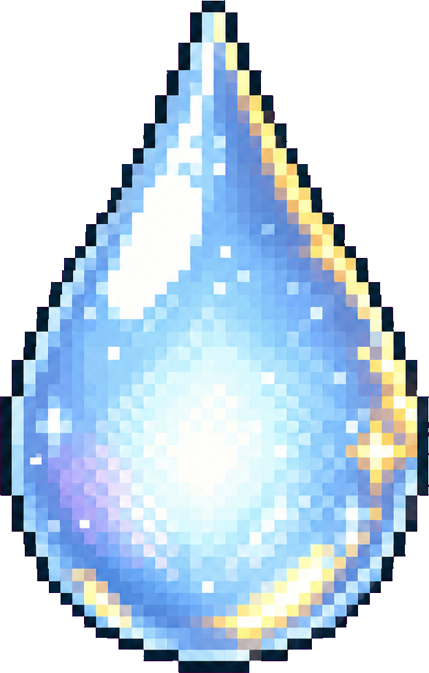
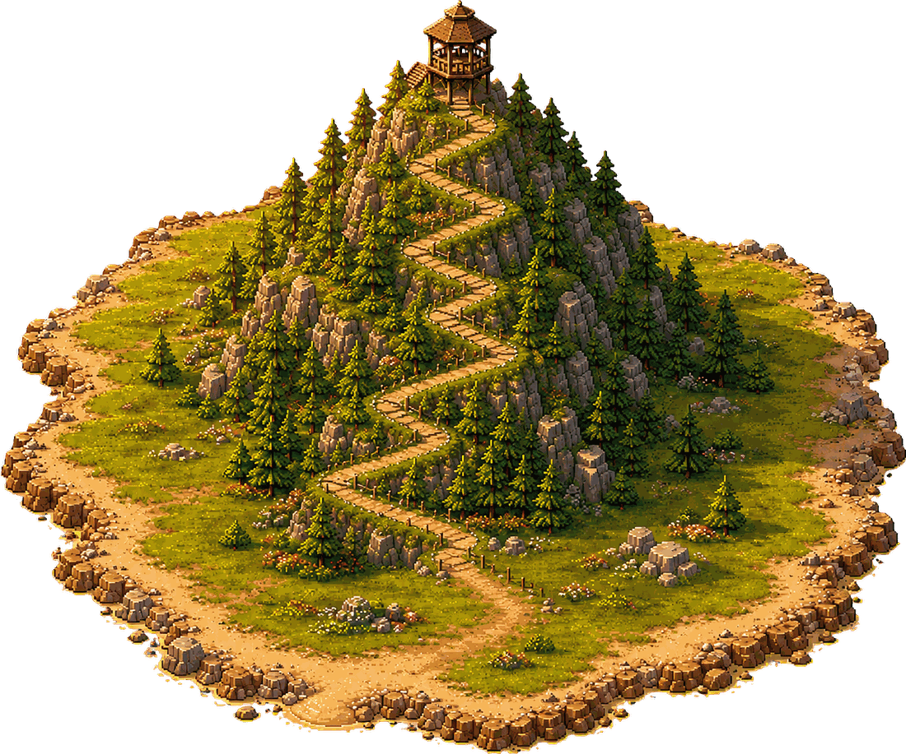
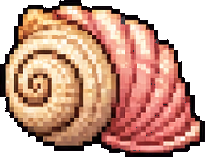
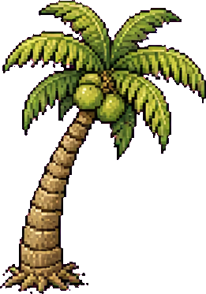
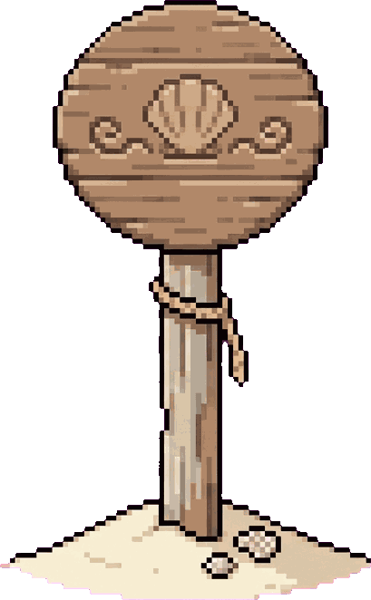
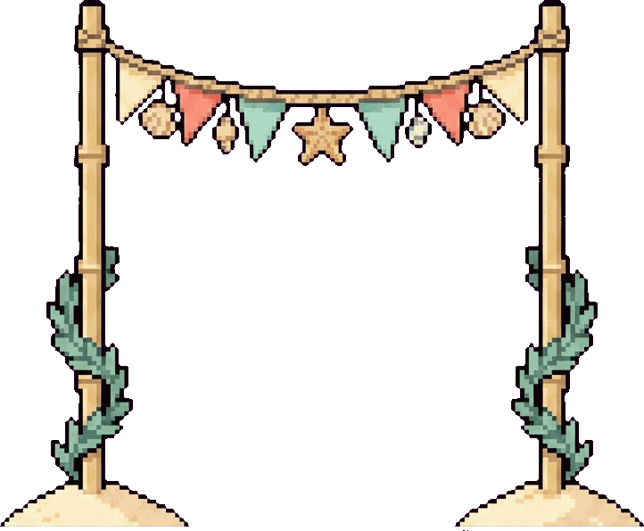
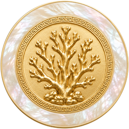
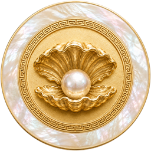
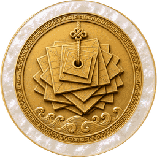

词山学海是百德中学母语部华文组的华文词汇自主学习平台。它不是一套课，也不是一份作业：学生自己决定今天复习哪些单元、用哪种方式、练多久。这一页告诉你怎么用它。
Vocab Summit is the self-directed Chinese vocabulary platform of the MTL Chinese Language Unit at Bukit View Secondary School. It is not a course and not an assignment: the student chooses which units to revise today, in which mode, and for how long. This tab tells you how to use it.
不用注册，不用密码。第一次进来只需要取一个昵称、选一个头像、选班级。进度存在这台设备上，并匿名同步到云端。
No sign-up, no password. The first visit asks only for a nickname, an avatar and a class. Progress is kept on the device and synced anonymously to the cloud.
01从海图出发：五个入口Five destinations, one sea map
首页是一张海图。四座岛是四个华文源流，码头是给零起点学生的入门层。点一座岛，船会真的航过去。先找自己的那一座就好，其余四个不必管。
The landing page is a sea map. The four islands are the four Chinese-language streams; the pier is the beginners' tier for students starting from zero. Tapping an island actually sails the boat there. Find the one that is yours and ignore the other four.
⚠️ 距离读成难度。码头离得最近，高级华文最远。这不是排版随手放的：海图上的位置就是「从这里开始」的提示。
⚠️ Distance is meant to be read as difficulty. The pier sits nearest and Higher Chinese furthest. The positions are not decorative — where an island sits on the map is the hint about where to start.
另有一个不在海图上的入口：教师后台 teacher.html，用学校邮箱登录，由母语部主任审批。学生不需要它。
One more entrance is not on the map: the teacher dashboard at teacher.html, which uses a school email sign-in and is approved by the HOD. Students never need it.
02第一次进来Your first visit
取昵称Pick a nickname
昵称从成语库里选，例如「锲而不舍」「随机应变」。不填真名，也不能填真名——排行榜上出现的只有这个化名。
Nicknames are chosen from a library of Chinese idioms — 锲而不舍, 随机应变 and so on. You do not type your real name and you cannot: the leaderboard only ever shows the pseudonym.
选头像与班级Avatar and class
头像有生肖、西游人物、瑞兽三组，一部分要用灵露买。班级用来分校内榜。身份（昵称／头像／班级）是山上与码头共用的，这样在码头就不会变成另一个人。
Avatars come in three families — zodiac animals, Journey to the West characters, auspicious beasts — some bought with 灵露. The class is what the in-school board sorts by. Identity (nickname, avatar, class) is shared between the mountains and the pier, so you are not a different person at the pier.
换设备Moving to another device
进度会匿名同步。如果换了设备没同步上，用「我的档案 → 进度码」：复制一串码，在新设备贴上去。
Progress syncs anonymously. If a new device does not pick it up, use 我的档案 → 进度码: copy the code on the old device and paste it on the new one.
遇到问题Something wrong?
每一屏左下角都有「💬 反馈」。写清楚在哪一屏、按了什么、看到什么。这是报错最快的路，老师会看到。
Every screen carries 💬 反馈 (tell us) at the bottom-left. Say which screen, what you tapped, what you saw. It is the fastest route and a teacher reads it.
头像有三家Three families of avatar
这些就是选择器里的图。生肖十二个全部免费；西游记五个要用

灵露买；瑞兽四个买不到，要靠年度试炼一级一级解锁（中一 → 中四）。头像是全站共用的，在码头也是同一个人。These are the actual pictures in the picker. All twelve zodiac animals are free; the five Journey to the West characters cost dew; the four auspicious beasts cannot be bought at all — they unlock one level at a time through the yearly trial (Sec 1 to Sec 4). The avatar is shared across the whole site — you are the same person at the pier.
03一个学段页怎么读：①②③Reading a stream page: the three steps
每个学段页都是同一条动线，编号就印在屏幕上。每一屏都从 ① 重新开始，所以看到 ① 不代表回到最前面，只代表「这一屏的第一步」。
Every stream page runs the same three steps, numbered on screen. Each screen restarts at ①, so seeing ① does not mean you went back to the beginning — it means "first step on this screen".

① 复习范围① What to revise
按年级 → 单元勾选。标题一行随时写着「已选 N 个单元 · 共 N 词」。右上角有 全选 / 清空。
Tick by year level → unit. The heading always reads "N units selected · N words". 全选 / 清空 (all / none) sit at the top right.
底下折叠的「筛选」可以再收窄：板块（核心／生活空间／巩固／进阶／文化站，各学段不同）与来源。默认收起，但标题会写明生效的筛选，所以词数对不上时看得出原因。
The collapsed 筛选 (filter) below narrows further: component blocks (core / everyday life / consolidation / advanced / culture — the set differs by stream) and source. It is collapsed by default, but the heading still states what is in force, so a surprising word count is always explainable.
② 选择学习方式② Learn or play
两个按钮：修行（安静地练）与 闯关（游戏）。这只是切换，不会跳页。
Two buttons: 修行 (practice), the quiet modes, and 闯关 (play), the games. It is a switch, not a page change.
③ 就地铺出活动③ The activities appear
卡片就在同一页展开。教的那张排在考的那张前面：词语闪卡 在 学习挑战 之前。设置（题数、难度、出题方式）在门后面，不在这一屏。
The cards open on the same page. The one that teaches comes before the one that tests: flashcards sit ahead of the quiz. Settings — how many questions, how hard, which prompt — live behind the door, not on this screen.
⚠️ 编号只用在真正多步的决定上。排行榜、成就墙、我的词山 都不编号——它们是去处，没有正确顺序，随时可以去。
⚠️ Numbers appear only on genuine multi-step decisions. The leaderboard, the badge wall and 我的词山 are never numbered — they are destinations, not steps, and there is no right order in which to visit them.
板块长什么样What the component blocks look like
「筛选」里的板块不是文字药丸，是这五枚徽章。哪些板块存在按学段不同：G1 三个、G2 与 G3 四个、高级华文五个。关掉的那一枚变灰，那是筛选状态，不是「还没拿到」。
The component blocks in 筛选 are not text pills, they are these five medallions. Which blocks exist differs by stream: three for G1, four for G2 and G3, five for Higher Chinese. A block you switch off goes greyscale — that is a filter state, not "not yet earned".
04山上的玩法What you can do on the mountains
四座山（G1／G2／G3／高级华文）的玩法完全一样，只有词库不同。
All four mountains (G1, G2, G3, Higher Chinese) offer the same activities; only the word list differs.
修行 · 安静地练修行 — the quiet modes
闯关 · 游戏闯关 — the games
其他去处 · 没有先后Destinations — no right order
灵露花在营地Dew is spent at the camp
营地卖露营装备与摆件，都是这样的图。商品外面不画框：一张图、一个名字、一枚和一个数字。灵露买不到掌握度，只买得到营地里的东西。
The camp sells gear and ornaments, and this is the art. Nothing is framed: a picture, a name, one and a number. Dew buys camp things and nothing else — never mastery.
05启航码头的玩法What you can do at the pier
码头是给零起点学生的：没读过华文、刚转校、或者只想先认得几个字的人。这里的词是看图学的，题目从图片和声音出发，不假设你已经认得任何一个汉字。
The pier is for students starting from zero: no prior Chinese, newly transferred, or simply wanting to recognise a few words first. Words are learned from pictures; questions start from an image or a sound and assume no character knowledge at all.
学习Learn
闯关Play
其他去处Destinations
船：四级，两种货币都能买Boats: four tiers, either currency
船是全站唯一一件

贝壳和灵露都买得到的东西，因为它会开在首页那张海图上，而大多数华文学生根本不进码头。两个标价，不是汇率：没有回售，价值过不去。下面的数字是「贝壳 / 灵露」，第一艘白送，而且只能一级一级买上去。Boats are the only thing on the site that shells and dew can both buy, because a boat sails on the front-page map and most Chinese-stream students never visit the pier. Two price tags, not an exchange rate: nothing sells back, so no value crosses. The figures below read "shells / dew"; the first boat is free, and they can only be bought one tier at a time.



⚠️ 踏浪竞速 是一层皮，不是另一种题目。同一盘题，开不开踏浪竞速，题目、贝壳、航程完全一样，只有反馈不同：答对一题，沙滩上的小人往前跳一步、跨过一根栏。没有东西在追你，也没有输的条件，一局到题数结束就结束。
⚠️ Beach run is a skin, not a different game. The same round with beach run on or off gives exactly the same questions, shells and progress — only the feedback changes: each correct answer hops the runner one step along the sand and over a hurdle. Nothing is chasing you and there is no way to lose; the round ends when the questions run out.
码头的航程 · 航海值 · 贝壳和山上的海拔 · 历练值 · 灵露是两套互不相通的系统。在码头练不会让山上的数字动，反过来也一样，两边也不能兑换。为什么要这样，在另一个分页 ①。
The pier's 航程 / 航海值 / 贝壳 and the mountains' 海拔 / 历练值 / 灵露 are two economies that do not connect. Practising at the pier moves no number on the mountain and vice versa, and neither currency converts. Why this matters is §1 of the other tab.
06试一试：填空挑战Try it: the cloze challenge
这是山上最主要的一个模式，也是四个能推高海拔的模式之一。读句子，选出空格里该填的词。下面是真的题目，用的是 G3 中二单元一的词。
This is the mountains' main mode and one of the four that can raise your altitude. Read the sentence, pick the word that belongs in the blank. The questions below are real, drawn from G3 Secondary 2 Unit 1.
喇叭读的是题干，空格处只读成一个停顿——它永远不会把答案念出来。整个平台都守这一条。另外：本页顶上的 拼音／英文 开关也管这些选项，试着开关看看。
The speaker reads the sentence, with the blank rendered as a pause — it never speaks the answer. That rule holds everywhere on the platform. Also: the pinyin/English switches at the top of this page drive these options too — try toggling them.
07试一试：连线Try it: match them up
码头的玩法之一：把图片和词语配成对。点一张图，再点它的词。下面是真的码头美术。
One of the pier's games: pair each picture with its word. Tap a picture, then tap its word. The art below is the real pier art.
把黑名单关掉，多按几次「换一板」：迟早会同时出现 猪肉 和 牛肉，两张图长得几乎一样，学生答错不是因为不认得词，而是因为分不出图。黑名单开着就永远不会同框。这是一条真实存在于线上的规则，不是这一页编的例子。
Turn the blacklist off and press "new board" a few times: sooner or later 猪肉 (pork) and 牛肉 (beef) appear together, and the two pictures are nearly identical — a wrong answer then means "could not tell the pictures apart", not "did not know the word". With the blacklist on they can never share a board. This rule is live on the site, not an example invented for this page.
08试一试：重整句子Try it: put the words in order
按顺序点出句子的词。托盘里还混着几块不属于这句的干扰词。
Tap out the words of the sentence in order. The tray also holds a few decoy tiles that do not belong in this sentence.
这一题有两个正确答案：「农夫在喂牛和鸡」和「农夫在喂鸡和牛」都通顺，两个都算对。判分时会对每一个合法答案打分，取匹配最长的那个当参照——否则一个正在往另一个答案排的学生，会眼看着自己排对的一段被退回去。
This item has two correct answers: 牛和鸡 and 鸡和牛 are both natural Chinese and both count. Scoring runs against every accepted answer and locks against whichever matches longest — otherwise a student heading for the second answer would watch a correct prefix get rejected.
还有：答错不扣任何东西。排对的部分锁成绿色，从第一个错位起退回托盘，并告诉你锁到第几格。学生看到的是语序在哪一段断掉，不是「全错」。
And: a wrong answer costs nothing. The correct prefix locks green, everything from the first misplaced tile returns to the tray, and the message says how far the lock reached. The student sees where the word order broke, not "wrong".
09三个数字，各管各的Three numbers that never merge
平台不给你一个总分。每个学段有三个数字，各自回答一个不同的问题。点下面的模式，看它喂哪一个。
The platform gives you no overall score. Each stream keeps three numbers, each answering a different question. Tap a mode below to see which ones it feeds.
只有四个模式能推高海拔：填空挑战 · 攀山竞速 · 华文解释 · 英文翻译（房间对战另算）。词雨灵露 玩得再久，海拔也不动——它练的是反应，不是「认得这个词」。打拼音档只给一成历练值、不给海拔，所以没办法靠它刷便宜的连对倍率。
Only four modes can raise altitude: cloze, mountain sprint, Chinese definition, English translation (live rooms count separately). No amount of word-rain moves it — that mode trains reaction speed, not "I know this word". The pinyin-typing tier pays a tenth of the effort points and no altitude, so it cannot be farmed for a cheap streak multiplier.
10拼音与英文：两个开关Pinyin and English: two switches
顶栏有 拼 拼音 和 中 EN 两颗按钮。开着的时候，导航和按钮会多一行拼音或英文。
The top bar carries a 拼 (pinyin) and a 中/EN button. When on, navigation and buttons gain a line of pinyin or English.
⚠️ 只有界面文字有注解，题目没有。题干、释义、句子、选项永远是纯中文——这是刻意的，和「朗读只读中文」是同一个沉浸逻辑。唯一的例外是拼音可以注在句子上。
⚠️ Only the interface is annotated, never the questions. Prompts, definitions, sentences and options stay pure Chinese on purpose — the same immersion logic as "only Chinese is ever spoken aloud". The single exception is that pinyin may be rubied over a sentence.
哪里有：G1／G2／G3 有，高级华文一个字节都不发（那一层的学生不需要）。码头默认两个都开，而且看图学词的卡片、词海垂钓答错后的拼音、重整句子的英文题干永远显示，不受开关影响——对零起点学生来说，把这几处藏起来等于让他盯着两个不认识的字。
Where: G1, G2 and G3 have them; Higher Chinese ships not one byte of either — its students do not need them. At the pier both default to ON, and a few places ignore the switches entirely: the flashcard face, the pinyin shown after a wrong answer in the fishing game, and the English prompt in 重整句子. For a zero-start learner, hiding those would mean staring at two characters they cannot read.
11常见问题When something does not work
| 症状Symptom | 先试这个Try this first |
|---|---|
| 朗读有声，音效没声Speech works, sound effects do not | 先检查 iPad 侧面的静音开关——它会掐掉网页音效但不影响朗读，症状一模一样。仍然没声就开 tools/sound.html。
Check the side mute switch on the iPad first — it silences web audio but not speech, which looks identical. If it persists, open tools/sound.html. |
| 完全没有朗读No speech at all | 这台设备可能没装中文语音。开 tools/voices.html 看一眼；受管的 Chromebook 要 IT 管理员在后台启用「Google 普通话」。
The device may have no Chinese voice installed. Open tools/voices.html to check; on a managed Chromebook the IT administrator has to enable Google 普通话. |
| 读音听起来不对A word sounds wrong | 多音字。平台带一张校正表，屏幕上的汉字不变，送给语音引擎的字串换成同音单音字。漏掉的请用 💬 反馈 告诉我们，写上是哪个词。 A polyphonic character. The platform carries a correction table: the characters on screen never change, but the string handed to the speech engine swaps in a same-sound single-reading character. If one slipped through, report it with 💬 反馈 and name the word. |
| 卡在「正在装载词库…」Stuck on "loading vocabulary…" | 网络问题。六秒后会自行放行；仍然卡住就刷新一次。 A network hiccup. It opens on its own after six seconds; refresh once if it does not. |
| 改了却看不到新版An update is not showing | 浏览器缓存最多十分钟。等一下或强制刷新。 The browser caches for up to ten minutes. Wait, or force-refresh. |
| 某个玩法是灰的An activity is greyed out | 它会写明原因，例如「这组没有图片」或「这组没有两个字以上的词语」。换一个学习范围就好，不是坏了。 It states the reason — "no pictures in this group", "no multi-character words here". Change the scope; nothing is broken. |
12给老师For teachers
教师后台The dashboard
teacher.html，学校邮箱登录，母语部主任审批。可以看班级进度、审昵称、处理反馈工单。它是独立的一页，不加载学生端的任何程序。
teacher.html, school email sign-in, approved by the HOD. Class progress, nickname approval, feedback tickets. It is a standalone page and loads none of the student-side code.
课堂上用：结伴登峰In class: hosted rooms
老师开房间，投影房号，学生输码进来一起答。结束时前三名会出现在颁奖台上，投影和学生自己的屏幕同时出现。房间照常计分，所以它不是捷径。
The teacher opens a room, projects the code, students join and answer together. The top three appear on a podium at the end, on the projector and on each student's own screen. Rooms score normally, so they are not a shortcut.
学生之间：同伴挑战Student to student: duels
学生自己开房约朋友对战。奖牌和 结伴登峰 的永不混算：一个是正式的课堂活动，一个是自己约的。
Students host their own duels. Those medals and the hosted-room medals are never pooled: one is the official classroom event, the other is self-arranged.
排行榜上是谁Who appears on the boards
只有档案标为学生的才发布到排行榜。老师、家长、公众只浏览。榜是分开排的：海拔一张、历练值一张，永远没有合计分。
Only profiles marked student publish to the boards. Teachers, parents and the public browse only. The boards are kept separate — one for altitude, one for effort points — and there is never a combined score.
这一分页写给任何科目的老师。词山学海表面上是一个华文词汇 App，但它真正积累下来的，是一批关于「学习系统该怎么设计」的裁定——每一条都是被真实的学生、真实的设备、真实的失败逼出来的，而且每一条都有代价。下面每一节都是：规则 → 为什么 → 它花了什么。
This tab is written for teachers in any discipline. Vocab Summit looks like a Chinese vocabulary app, but what it has actually accumulated is a set of rulings about how a learning system should behave — each forced by real students, real devices and real failures, and each with a price. Every section below reads: the rule → why → what it cost.
写这一页的人不是专业开发者，是一名母语部主任。所以这里没有「最佳实践」的口气，只有「我们试过，这条是对的，那条是错的」。
The person who built this is not a professional developer but a Head of Department. So there is no best-practice voice here, only "we tried it; this one held and that one did not".
01水线：两套经济，中间那条线不许跨The waterline: two economies that must not meet
平台上有两批完全不同的学生：在四座山上按课本单元复习的，和在码头从零开始认字的。它们各有一套进度与货币，中间那条线叫水线。
The platform serves two populations: students revising textbook units on the four mountains, and students at the pier learning to recognise their first characters. Each has its own progress and its own currency, and the line between them is called the waterline.
四座山The four mountains
- 掌握度mastery
- 海拔 Altitude
- 努力值effort
- 历练值 Tempering points
- 货币currency
- 灵露 Dew
启航码头The pier
- 掌握度mastery
- 航程 Distance sailed
- 努力值effort
- 航海值 Seafaring points
- 货币currency
- 贝壳 Shells
这条线不是靠人记住的，是靠代码里根本没有那条路径：山上的程序从不读码头的存储，码头的程序从不写山上的存储。规则写在文件里会被忘记，写不出来的路径不会。
The line is not maintained by remembering it. It is maintained by the fact that the path does not exist in the code: the mountain engine never reads the pier's store and the pier engine never writes the mountains'. A rule in a document gets forgotten; a route that was never written cannot be taken.
码头的学生大多是刚转来、家里不讲华文、或者过去几年一直在班上垫底的那批。如果两套数字通用，他们在同一张榜上永远是最后一名，而且是在一把他们从来没同意参加的尺子上垫底。分开之后，码头学生的进度是自己的：航程从 0 走到 100 是一件完整的事，不是别人 3,741 里的 100。
Pier students are mostly the ones who just transferred in, speak no Chinese at home, or have been bottom of the class for years. If the two sets of numbers were interchangeable they would sit last on a shared board forever — last on a ruler they never agreed to be measured by. Kept apart, a pier student's progress is their own: sailing from 0 to 100 is a whole thing, not 100 out of somebody else's 3,741.
写两遍。两套存储、两套货币、两套排行榜、两套徽章、两套费率表，以及一条「改一处要改两处」的长期负担。并且我们接受了这个代价——唯一允许跨线的三样东西（身份、只读的查词、可以用两种货币各自标价买的船）都是逐条论证过的收窄，不是先例。
Writing it twice. Two stores, two currencies, two leaderboards, two badge families, two rate tables, and a permanent "change it here, change it there too" tax. We accepted that cost. The only three things allowed across — identity, the read-only word lookup, and boats that carry two independent price tags — were each argued individually and none of them is a precedent.
02三个数字永不相加Three numbers that are never summed
海拔＝掌握了多少词（广度，单调不减，一词一米）。历练值＝下了多少功夫（深度，可重复，随难度与连对放大）。灵露＝努力换来的货币（只在营地商店花）。三者永不相加、永不互换、永不合成一个排名。
Altitude = how many words are mastered (breadth; never decreases; one word, one metre). Tempering points = how much work went in (depth; repeatable; scaled by difficulty and streak). Dew = the currency effort buys (spent only in the camp shop). The three are never added, never exchanged, never merged into one ranking.
一个总分会掩盖它自己混进去的东西。「广度」和「努力」奖励的是完全不同的行为：把两者相加，学生就会去找那个换算率最划算的行为，而那个行为几乎一定不是学习。分开之后，一个走得慢但每天来的学生，在历练值上是显眼的，即使他的海拔还很低——而这正是我们最想留住的那种学生。
A composite score hides what went into it. Breadth and effort reward completely different behaviours; add them and the student goes hunting for whichever behaviour has the best exchange rate, which is almost never learning. Kept apart, the slow student who turns up every day is visible on the effort board even while their altitude is low — and that is exactly the student we most want to keep.
没有「第一名」。老师想问「谁最强」时，我们答不上来，只能反问「你要问的是认得最多，还是练得最勤？」——这个摩擦是真实存在的，我们选择留着它。
There is no single "top student". When a teacher asks who is best, we cannot answer; we can only ask back "knows the most words, or works the hardest?" That friction is real, and we chose to keep it.
03什么算「掌握」，写死在四个模式上What counts as mastery is pinned to four modes
只有填空挑战 · 攀山竞速 · 华文解释 · 英文翻译会让一个词计入海拔（房间对战另经一条按词文本计分的路）。词语闪卡不算，词雨灵露不算，打拼音不算。
Only cloze, mountain sprint, Chinese definition and English translation can mark a word as mastered (live rooms confer it by a separate, text-matched route). Flashcards do not. Word-rain does not. Typing pinyin does not.
这四个模式的共同点是：学生必须从词义那一端出发，把词生产出来或辨认出来。翻一张闪卡是「见过」，在词雨里点掉一个下落的词是「反应快」，打对拼音是「会读」——三样都有价值，但都不是「认得这个词的意思」。掌握度只应该记录一件事，否则它什么也不记录。
What those four share is that the student must start from the meaning and produce or identify the word. Flipping a flashcard is "have seen it"; tapping a falling word is "reacted fast"; typing the pinyin is "can pronounce it". All three have value; none of them is "knows what this word means". A mastery number should record one thing, or it records nothing.
有一段时间，屏幕上的说明是对的，代码是错的：说明写着四个模式，实际只有两个真的计入。裁定的方向是让代码去追文案，因为文案才是我们真正想要的设计。这类「文档与实现不一致」的缺陷，最难发现，也最伤信任。
For a while the on-screen explanation was right and the code was wrong: the text named four modes, only two actually counted. The ruling was to make the code catch up with the text, because the text was the design we actually wanted. Divergence between what a system says and what it does is the hardest class of bug to spot and the most corrosive to trust.
⚠️ 打拼音只给一成历练值、不给海拔、不进连对。否则它就是一条刷便宜连对倍率的路：同一个词反复打拼音，倍率一路涨，而学生根本没在想词义。
⚠️ The pinyin-typing tier pays a tenth of the points, no altitude, and does not feed the streak. Otherwise it becomes a cheap multiplier farm: type the same word's pinyin over and over, watch the streak climb, and never once think about meaning.
04在「更难」与「更多曝光」之间，一律选曝光Where "harder" and "more exposure" pull apart, take exposure
码头的「看句选词」把一个词从真实句子里挖掉让学生选。它不是句子测验。学生看不懂整句是正常状态：句子是语境，不是考核对象。目标是让零起点学生反复遇见这些词。
The pier's "fill the sentence" blanks one word out of a real sentence. It is not a sentence test. Not understanding the whole line is the expected state: the sentence is context, not the thing being assessed. The goal is to make a zero-start learner meet these words again.
贴图不是提示，是题目的一部分The picture is not a hint
「这包＿＿多少钱？」单看句子，香料、龙虾、苹果、糖全部成立——这题无解。配一张糖的图，答案才唯一。
"How much is this packet of ＿＿?" On the sentence alone, spices, lobster, apples and sweets all work — the item has no answer. With a picture of sweets, it has exactly one.
量词泄漏是刻意的Measure-word leakage is deliberate
「这支＿＿多少钱？」会把答案收窄到手机一类。在山上这算送分；在码头这正是量词的教学价值——从「支」推出答案，就是学会了「支」。永远不要为了「更难」把量词挖掉。
"How much is this 支 ＿＿?" narrows the answer to phone-like objects. On the mountains that would be a giveaway; at the pier it is exactly what measure words are for — inferring the answer from 支 is having learned 支. Never remove the measure word to make it harder.
词汇不是靠一次高难度的检索学会的，是靠足够多次、足够低门槛的相遇。对一个零起点学生，「难度」这个旋钮拧过头的代价不是学得慢，是不再来了。所以这一层的设计问题永远不是「这题够不够难」，而是「这题会不会让他明天还想再开一次」。
Vocabulary is not acquired through one hard retrieval but through enough encounters at a low enough threshold. For a zero-start learner, over-turning the difficulty dial does not cost slower learning — it costs not coming back. So the design question at this tier is never "is this hard enough" but "will this student open it again tomorrow".
这一层测不准。码头的「认得」是很浅的认得，它不能拿去证明任何学业成效。我们知道，并且没有假装它可以。
This tier measures badly. "Recognised" at the pier is a shallow recognition and cannot be used as evidence of attainment. We know that, and we do not pretend otherwise.
05泄题是设计缺陷，不是学生作弊Answer leakage is a design defect, not cheating
曾经有一个缺陷：切换 拼音／难度／出题方式 会重新抽一次干扰项，而正确答案是唯一每次都活下来的那个。切两次就能看出答案。没有学生需要懂技术就能发现它。
There was once a defect: toggling pinyin, difficulty or prompt type re-rolled the distractors, and the correct answer was the only option that survived every roll. Toggle twice and the answer is visible. No technical knowledge required to find it.
每题缓存干扰池，加宽难度时只追加选项、不重抽。所以这个平台上的语言支援开关只做一次 class 翻转、什么都不重画——这不只是性能考虑，会重绘的开关就会重抽。
Cache the distractor pool per item; widening the difficulty only appends options and never re-rolls. Which is why the language switches on this platform flip one class and redraw nothing — not for performance, but because a switch that redraws is a switch that re-rolls.
⚠️ 同一类缺陷的其他形态，都真实发生过：码头有三个玩法曾经「点了图片就把答案念出来」；喇叭按钮曾经嵌在选项里面，手指偏两毫米就等于提交了那个选项；组字成词答题前逐字朗读，等于把答案按顺序念一遍。规则：喇叭读的是选项或题干，永远不读答案。
⚠️ The same defect keeps reappearing in other shapes: three pier activities once spoke the answer aloud when the picture was tapped; the speaker button once sat inside the option, so a finger two millimetres off submitted that option; reading a word character-by-character before the answer is given recites the answer in order. Rule: the speaker reads the options or the prompt, never the answer.
06未认得优先，干扰项从同组抽Weak-first sampling, same-group distractors
未认得的先出Unknown words come first
出题时先分两桶：还没答对过的和已经认得的，桶内打乱，未认得的先取。以前是纯随机，结果是：一个已经认得八十个词的学生，一轮五题可能一个新词都碰不到，而徽章的门槛直接数「认得几个词」——进度看起来卡住了，其实是抽样的问题。
Items are bucketed before they are drawn: never answered correctly and already known, shuffled within each bucket, unknown first. It used to be uniformly random, and the result was that a student who already knew eighty words could meet no new word at all in a five-item round — while the badge thresholds count known words. Progress looked stuck; the sampling was the cause.
干扰项永远同组Distractors always come from the same group
干扰项从目标词的同一个组别抽，没有例外。用「苹果」当「巴士」的干扰项，学生排除它靠的不是词汇知识，是常识——那道题什么也没测到。
Distractors are drawn from the target's own group, without exception. Offering "apple" against "bus" lets the student eliminate it with common sense rather than vocabulary knowledge, and the item has measured nothing.
⚠️ 同组之后还有一层互斥黑名单（包子/饺子、猪肉/牛肉、汤/面、茶/咖啡…），因为有些同组词的图片几乎一样。⚠️ 黑名单的维护依据是学生真实的混淆数据，不是凭感觉加预防性条目。⚠️ 如果黑名单把可用词压到不足一板，宁可开一块小板，也不重新放行被禁的一对。
⚠️ A mutual-exclusion blacklist sits on top of the same-group rule (bao/jiaozi, pork/beef, soup/noodles, tea/coffee…), because some same-group words have near-identical pictures. ⚠️ It is maintained from real confusion data, never from hunches about what might confuse. ⚠️ If the blacklist leaves too few words for a full board, open a smaller board rather than re-admit a banned pair.
黑名单起初只管选择题，管不到连线——因为连线的板面就是回合词表，从不走抽干扰项那条路。同一条规则要在每一条产生「同屏出现的词」的路径上各实现一次，这是这类规则的固有成本。
The blacklist originally governed multiple-choice only and missed the matching board, because a match board is the round's word list and never passes through distractor selection. A rule like this has to be implemented on every path that puts words on screen together — that is its inherent cost.
07不静默失败：灰掉，并且写明原因Never fail silently: grey it out and say why
码头的「数字」组没有图片，而且是刻意没有：数字本身就是符号，画三个苹果教「三」，教的是苹果。于是「看图识词」和「听音识图」在这一组下无题可出。
The pier's 数字 (numbers) group has no pictures, deliberately: a numeral is already a symbol, and drawing three apples to teach "three" teaches apples. So the two picture-led modes have nothing to ask under that group.
只过滤 = 静默失败Filtering alone fails silently
第一版只是把这些词过滤掉。结果：学生选了模式、按下出发、什么都不发生。没有报错，没有提示，就是没反应——学生只会认为「坏了」或者「我按错了」。
The first version simply filtered those words out. The result: the student picked the mode, pressed go, and nothing happened. No error, no message, just nothing — from which a student concludes "it's broken" or "I did it wrong".
现在Now
这两个玩法在无图范围下变灰并写明「这组没有图片」；记忆中的模式若被封锁，自动切到可用的。而且理由是每扇门自己的——「组字成词」灰掉时写的是「这组没有两个字以上的词语」，如果它也写「没有图片」，学生会跑去找图。
Both modes grey out and state "no pictures in this group", and a remembered mode that is blocked switches to an available one. The reason is per door: when the word-building game greys out it says "no multi-character words here" — telling that student to go find pictures would send them looking for the wrong thing.
任何有筛选、有范围、有前置条件的学习工具都会撞上这个：「没有内容」和「坏了」在学生眼里长得一模一样。唯一的分辨方式是系统自己说出来。
Any learning tool with filters, scopes or prerequisites meets this: "no content" and "broken" look identical to a student. The only way to tell them apart is for the system to say which it is.
08语言支援是闸门，不是重绘The language aids are a gate, not a redraw
拼音和英文永远都在页面里，一个 class 决定显不显示。切换只是一次开关翻转，没有任何东西被重新生成。这一页用的是同一套机制——顶栏的 中文／双语／English 就是它。
The pinyin and English are always present in the page; one class decides whether they show. Toggling flips a switch and regenerates nothing. This page uses the same mechanism — the 中文/双语/English switch at the top is it.
性能只是次要理由。真正的理由在第 ⑤ 节：会重绘的开关就会重抽干扰项，那就是泄题。把「显示」和「生成」分开，是一条能防住一整类缺陷的结构决定。
Performance is the lesser reason. The real one is §5: a switch that redraws is a switch that re-rolls the distractors, and that is answer leakage. Separating "what is shown" from "what is generated" is a structural decision that closes a whole class of defects.
⚠️ 拼音是手写的，不是生成的。固定字符串手写就绕开了所有多音字陷阱。每加一条英文标签就补一条拼音标签，并有一个自检遍历真实数据：缺了拼音是静默的（查不到就返回空字符串），所以必须有程序去数。有两个组别就是这样上线时既没有拼音也没有英文，没人发现。
⚠️ The pinyin is hand-written, not generated. A hand-written fixed string sidesteps every polyphonic-character trap. Every English label gets a pinyin label added alongside it, and a self-check walks the real data: a missing pinyin is silent (a lookup miss returns an empty string), so something has to count them. Two groups shipped with neither pinyin nor English and nobody noticed.
09只有中文会被读出来Only Chinese is ever spoken
这是华文 App，所以英文释义一律静音。喇叭只读汉字。而且永远不把拼音字符串喂给语音引擎——它会被读成一串没有声调的英文。真读错的词只能用同音汉字修。
This is a Chinese app, so English glosses are never spoken. The speaker reads characters only. And a pinyin string is never handed to the speech engine — it comes out as toneless English. A genuinely mispronounced word is corrected with a same-sound character, never with pinyin.
读音以数据为准The data decides the reading
「姐姐长得清秀」屏幕上写 zhǎng，声音却是 cháng。现在朗读函数同时收到汉字和这一句的拼音，把多音字换成同音的单音字（长 zhǎng → 掌）再送出去，屏幕上的汉字一个都不动。
One sentence showed zhǎng on screen and spoke cháng. The speak function now receives the characters and that sentence's pinyin together, swaps the polyphonic character for a same-sound single-reading one before handing it over, and changes not one character on screen.
每个字只钉一个读音Pin one reading per character
两个方向都钉过，结果「长时间」变成了「常时肩」——引擎拿到一串非词，只能逐字念，语调全散。只钉引擎最容易猜错的那一个。替换字必须：只有一个读音 · 声韵调完全相同 · 常用字。自动从字典挑会挑出生僻字，已废弃，表是手工维护的。
Pinning both directions turned a common word into a non-word; the engine could then only read it character by character and the prosody collapsed. Pin only the reading the engine most often gets wrong. A substitute must have exactly one reading, identical sound and tone, and be a common character. Picking substitutes automatically from a dictionary surfaced obscure characters; that was abandoned and the table is maintained by hand.
⚠️ 音节数对不上就整句不动。宁可维持引擎默认，也不让后面的读音整体错位。同一条判断也用在注音上。
⚠️ If the syllable count does not line up, the whole string is left alone. Better the engine's default than a substitution that shifts every reading after it. The same test guards the ruby annotations.
这些规则一半是被设备逼出来的：受管 Chromebook 装的语音会自称中文却没有声调，所以音色要评分而不能取第一个；苹果平台上朗读会把整个音频通道抢走，所以音效要能把通道要回来；iPad 需要在用户的第一次点击里同步发一句空白语音，否则整节课都没有声音。一条也不能靠「应该没问题」。
Half of these rules were forced by the devices: the voice on a managed Chromebook reports itself as Chinese but has no tones, so voices must be scored rather than taken in order; on Apple platforms speech seizes the entire audio channel, so the sound effects must be able to take it back; an iPad needs a silent utterance fired synchronously inside the student's first tap or there is no sound for the rest of the lesson. Not one of these could be assumed away.
10徽章是开放式里程表，不是集邮Badges are an open odometer, not a stamp album
码头的九级航海徽章按绝对值发：10 / 25 / 50 / 75 / 100 / 150 / 200 / 300 / 400 词。永不重新编号，也没有终点徽章——破 400 就加一级。
The pier's nine sailing badges are awarded at absolute counts: 10, 25, 50, 75, 100, 150, 200, 300, 400 words. They are never renumbered and there is no final badge — pass 400 and a level is added.

珊瑚徽Coral25
珍珠徽Pearl50
牵星板徽Star boards200三个徽章家族，各有各的美术与计数Three badge families, three sets of art and three counters
上面九枚是码头的。山上另有两家：里程碑（板块章 → 单元章 → 年级章 → 顶级词王，用的是板块那五枚美术）与对战奖牌（结伴登峰／同伴挑战 各金银铜，另加称号）。三家永不混算，也不共用美术——「我有几枚徽章」在这个平台上不是一个有答案的问题，得先问哪一家。
The nine above belong to the pier. The mountains carry two more families: milestones (component → unit → year level → top word-king, drawn with the five component medallions) and battle medals (gold, silver and bronze for rooms and for duels, plus a title). The three never pool and never share art — "how many badges do I have" is not a question with an answer here until you say which family.
因为词表会长大。码头的词表一天之内从 36 涨到 100 再到 150。如果徽章是「集齐全部」，那条终点线就会往后跑——等于凭空收回学生已经付出的努力。一个百分比进度条在内容还会增加的系统里是一个会背叛学生的承诺。
Because the word list grows. The pier's list went from 36 to 100 to 150 within a single day. If a badge means "collect them all", the finish line moves away from the student — which retroactively confiscates work they had already done. In any system whose content keeps growing, a percentage-complete bar is a promise that will betray the learner.
⚠️ 同一条逻辑推翻了「图鉴」。未认得的词曾经显示成一个黑影加问号。那是收藏家的吊胃口，而未认得的那个词，恰恰是最值得读的那一个。现在它是一行普通的列表：缩略图 · 词语 · 拼音 · 英文 · 还不认得。
⚠️ The same logic overturned the "collection" screen. Unlearned words used to appear as a silhouette with a question mark. That is a collector's tease, and the word you do not know is precisely the one most worth reading. It is now an ordinary list row: thumbnail, word, pinyin, English, "not yet known".
11给零起点学生的模式，没有失败条件The beginners' mode has no fail state
「踏浪竞速」里，答对一题，跑者就在沙滩上跳过一格、跨过一根栏，一直跑到终点拱门。没有任何东西在追他，也没有时钟。不要给它加失败条件。
In "beach run", each correct answer hops the runner one step along the sand and over a hurdle, all the way to the finishing arch. Nothing is chasing them and there is no clock. Do not give it a fail state.
沙滩上那条路是反馈，不是赛道。它告诉学生「你在动」，不是「你要被淘汰了」。零起点学生永远不该被半途掐掉——一局到题数结束就结束。追赶的紧张感对已经有把握的学生是燃料，对刚起步的学生是退出按钮。
The track along the sand is feedback, not a race. It says "you are moving", not "you are about to be eliminated". A zero-start learner should never be cut off mid-round; the round ends when the questions do. The tension of being chased is fuel for a confident student and an exit button for a beginner.
⚠️ 早一版真的有一层潮水在后面涨。它也追不上人，但 2026-08-17 整个撤掉了：与其让「会不会被追上」这个问题存在，不如让画面上根本没有追兵。
⚠️ An earlier build did have a tide rising behind the runner. It could not catch them either, but it was removed entirely on 2026-08-17: better that the question "can it catch me?" never arises than that the answer be no.
⚠️ 它是一层皮，不是第二条管线。整段代码不出题、不判分、不发货币、不写存储。同一盘题开不开它，题目与收益完全相同。⚠️ 而且跑者的位置是「现在第几题」的纯函数，不按答对次数累加——只要有一个玩法走了不调用钩子的路径，累加就会让跑者早一格或晚一格到终点。
⚠️ It is a skin, not a second pipeline. None of its code asks questions, scores, awards currency or writes to the store. The same round with it on or off yields identical questions and identical rewards. ⚠️ And the runner's position is a pure function of "which question am I on", never an accumulator — with an accumulator, any activity that reaches an answer by a path that skips the hook lands the runner one step early or late.
12隐私与滥用：署名，而不是验证码Privacy and abuse: attribution, not CAPTCHAs
不收学生个人资料No student personal data
匿名登录，昵称从成语库里选，学生打不出真名。云端存的是进度，不是人。
Anonymous sign-in; nicknames are picked from an idiom library, so a real name cannot be typed. What is stored in the cloud is progress, not a person.
为什么不加验证码Why no CAPTCHA
威胁模型对不上。验证码防的是机器人，实际发生的是无聊的学生手打垃圾——验证码一个也拦不住。纯前端的可绕过，第三方的涉及未成年人数据。真正管用的是署名 + 可停用的额度。
The threat model does not match. A CAPTCHA stops robots; what actually happens is a bored student typing rubbish by hand, which it does not stop at all. A front-end one is trivially bypassed and a third-party one sends minors' data offsite. What works is attribution plus a quota that can be switched off.
⚠️ 额度数字不显示在表单上。「今天还可以提交 20 次」对最可能灌垃圾的那批学生读起来是一个待破的记录。限制照旧生效，只是不宣传；用完时的提示也不带数字。
⚠️ The quota number is not printed on the form. "You may submit 20 more times today" reads, to exactly the students most likely to spam it, as a record waiting to be broken. The limit still applies; it is simply not advertised, and the message when it runs out carries no number either.
13工程约束就是教学约束The engineering constraints are pedagogical constraints
| 约束Constraint | 它其实是一个教学决定Why it is really a teaching decision |
|---|---|
| 横屏优先Landscape first | 学生用的是带键盘的 iPad 和 Chromebook（学校配发）。竖屏手机是可用的次要回退，永不锁定方向。为想象中的设备设计，等于为没有人设计。 Students use school-issued iPads with keyboards and Chromebooks. Portrait phones remain a working fallback and orientation is never locked. Designing for an imagined device is designing for nobody. |
| 旧 iPad 是主力机Old iPads are the main machines | 最花哨的那些视觉效果在低年级学生的机器上最慢，而低年级正是最需要视觉支持的一层。所有玻璃面板都有一套不带模糊的回退。 The showiest visual effects are slowest on the youngest students' machines — and the youngest are the tier that most needs visual support. Every glass panel ships a no-blur fallback. |
| 没有构建步骤No build step | 纯静态页面，改一个字就能上线。继任者只要会改 HTML 就能接手——对一个由一名老师维护、要活得比这名老师久的项目，这比任何技术优雅都重要。 Plain static pages; change one word and deploy. A successor who can edit HTML can take it over — for a project maintained by one teacher and meant to outlast that teacher, that matters more than any technical elegance. |
| 每次部署推进版本号A version bump on every deploy | 托管方给每个文件十分钟缓存，而且每个文件各自老化，于是设备上会出现新样式配旧程序。真实症状：新徽章有悬停效果，点了没反应。这不是洁癖，是学生会看到的故障。 The host caches each file for ten minutes and each file ages separately, so a device can hold a new stylesheet with an old script. Real symptom: the new badges had hover states but did nothing when tapped. Not fastidiousness — a fault the students see. |
| 断言证明不了事件Assertions do not prove events | 有两个功能通过了全部自动化检查，却在真浏览器里第一次接触就失败。自动化能证明数据流对，证明不了手指按下去有没有反应。几何、手感、触摸目标，只能上真设备。 Two features passed every automated check and failed on first contact in a real browser. Automation proves the data flows; it cannot prove that a finger press arrives anywhere. Geometry, feel and touch targets need a real device. |
14现况、未完成、以及还没有证据的部分What is done, what is not, and what has no evidence yet
这一节存在的理由是：一个只列成绩的项目介绍是不可信的。
This section exists because a project write-up that lists only achievements is not credible.
已经在跑Shipped and running
- 四座山各 23 个单元，共 3,741 个词条；码头 149 个词、90 句生活语句
- 23 units per stream, 3,741 stream entries; 149 pier words and 90 everyday sentences
- 五站通用查词（2,142 条索引，只读）
- Cross-station word lookup, read-only, 2,142 entries
- 课堂实时房间与同伴对战、颁奖台
- Live classroom rooms, student duels, end-of-round podium
- 教师后台：进度、昵称审批、反馈工单
- Teacher dashboard: progress, nickname approval, feedback tickets
建了一半Half built
- 生活空间只逐场景验过 学校 一个，其余九个尚未过一遍
- Of the ten everyday-life scenes, only school has been walked through scene by scene
- 消耗品与竞速道具：目录、库存、商店已建，效果逻辑与赛前选择未建
- Consumables and race power-ups: catalogue, inventory and shop exist; the effects and the pre-race picker do not
- 部分云端安全规则尚未发布，对应功能会显示读取失败
- Some cloud security rules are unpublished; the matching features report a read error
还没有证据No evidence yet
- 没有前后测评量表。目前无法证明平台上的掌握增长与考试成绩相关——基线没有建立，这是最大的缺口
- There is no pre/post instrument. We cannot currently show that mastery gains on the platform relate to attainment — no baseline was established, and this is the biggest gap
- 尚未在真设备上验过：iPad 上的滑杆手感、手机上的海图航行、Chromebook 上的玻璃面板性能
- Not yet verified on real hardware: slider feel on iPad, sea-map sailing on a phone, glass-panel performance on Chromebooks
- 段位与积分的数值仍是提案，要跑满一个学期的真实数据后重新校准
- The rank and points numbers are still proposals, to be recalibrated after a full term of real data
⚠️ 一条刻意保留的偏差。「重整句子」教的是语序，而记录里存的是词。学生可能已经认得某个词，却从没排对过那句话，出题时会当成复习。要精确就得新建一份「排对过的句子」记录——而当前阶段的原则是先加词，别再加系统。这个偏差是知情的，写下来，不假装它不存在。
⚠️ One bias we knowingly keep. The sentence-ordering game teaches word order, but the record it consults stores words. A student may know a word and never have ordered that sentence correctly, and the sampler will treat it as revision. Fixing it properly means a second record of "sentences ordered correctly" — and the current principle is add words, not more systems. The bias is documented rather than denied.
15如果你想搬到自己的科目If you want to take this to your own subject
下面十条与华文无关，任何有「一堆要记的东西 + 一批起点差距很大的学生」的科目都适用。
None of the ten below is about Chinese. They apply to any subject with a body of material to retain and a cohort whose starting points differ widely.
| 规则Rule | 在你的科目里问自己Ask yourself |
|---|---|
| 给落后最多的那批学生一套自己的尺子Give the furthest-behind their own ruler | 我的入门层学生，是在和高年级同一张榜上垫底吗？Are my beginners bottom of the same board as everyone else? |
| 不要合成总分Do not compute a composite score | 我这个分数把「学会了」和「做得多」混在一起了吗？Does my score mix "has learned" with "has done a lot"? |
| 写死「什么算学会」Pin down what counts as learned | 哪些活动能推进它？为什么是这几个，不是别的？Which activities advance it, and why those and not others? |
| 曝光优先于难度Exposure before difficulty | 我把题调难，是为了测得更准，还是为了显得严谨？Am I making it harder to measure better, or to look rigorous? |
| 审一遍泄题Audit for leakage | 有没有哪个开关、哪个提示、哪段朗读，把答案说了出来？Does any toggle, hint or audio give the answer away? |
| 干扰项必须是真的干扰Distractors must actually distract | 学生排除错项靠的是知识，还是常识？Do students eliminate wrong options with knowledge, or with common sense? |
| 先出没学会的Serve the unlearned first | 我的随机出题，会不会让学得多的人反复碰到已经会的？Does random selection keep re-serving what the strong student already knows? |
| 不静默失败Never fail silently | 「没有内容」和「坏了」在学生眼里分得出来吗？Can a student tell "no content" from "broken"? |
| 进度条不要承诺会跑掉的终点No finish line that moves | 内容还会增加吗？那百分比就是一个会失效的承诺。Will the content grow? Then the percentage is a promise that will break. |
| 入门层不设失败条件No fail state at the entry tier | 我的「紧张感」，对最弱的那个学生是燃料还是退出按钮？Is my "tension" fuel, or an exit button, for my weakest student? |
16设计参考的框架Frameworks the design draws on
下面是设计时参考的文献。它们是设计的依据，不是本平台成效的证据——本平台自己的成效数据见第 ⑭ 节，目前是空的。
These informed the design. They are grounds for the design, not evidence of this platform's effectiveness — for that see §14, which is currently empty.
检索练习与间隔Retrieval practice and spacing
Karpicke & Roediger (2008)、Roediger & Butler (2011)、Cepeda 等 (2006)。对应本平台：四个掌握模式全部要求学生把答案取出来，而不是重读；待巩固队列与未认得优先是间隔的粗略实现。
Karpicke & Roediger (2008); Roediger & Butler (2011); Cepeda et al. (2006). Where it shows: all four mastery modes require the student to produce the answer rather than re-read it; the review queue and weak-first sampling are a coarse implementation of spacing.
自主学习动机Self-determination theory
Deci & Ryan (2000)：自主 · 胜任 · 归属。对应本平台：学生自己选范围与模式（自主）；没有失败条件与分开的三个数字（胜任）；房间、颁奖台与班级榜（归属）。
Deci & Ryan (2000): autonomy, competence, relatedness. Where it shows: the student chooses scope and mode (autonomy); no fail state and three separate numbers (competence); rooms, podium and class boards (relatedness).
形成性评价Assessment for learning
Black & Wiliam (1998)。对应本平台：前缀锁定告诉学生语序在哪一段断掉，而不是「错」；答错不扣任何东西；反馈即时且具体。
Black & Wiliam (1998). Where it shows: prefix locking tells the student where the word order broke rather than "wrong"; a wrong answer costs nothing; feedback is immediate and specific.
图文双码与词汇习得Dual coding and vocabulary acquisition
Paivio (1986)、Mayer (2009)、Nation (2001)。对应本平台：码头一律图词并置；Nation 关于「同一个词需要多次相遇」的论述，正是第 ④ 节「曝光优先」的直接依据。
Paivio (1986); Mayer (2009); Nation (2001). Where it shows: every pier item pairs a picture with a word; Nation's account of the number of encounters a word needs is the direct basis for §4.
技术整合层次Levels of technology integration
RAT 框架（Hughes, Thomas & Scharber, 2006）：替代 · 放大 · 转化。诚实的自评：大部分模式属于放大；真正称得上转化的只有码头那一层——它让一批过去无法参与词汇课的学生第一次有了自己的进度。
The RAT framework (Hughes, Thomas & Scharber, 2006): Replacement, Amplification, Transformation. An honest self-assessment: most modes are amplification; the only part that genuinely reaches transformation is the pier tier, which gave a group of students who could not previously take part in vocabulary lessons a progression of their own.
内容归属Content provenance
发布的每一句释义与填空句都是本组自撰，课文例句已从发布文件中彻底移除，所以站点可以公开分享。恢复例句需要书面许可与登录层，在那之前不会重新引入。
Every published definition and cloze sentence is original departmental authorship; textbook example sentences were removed from the published files entirely, which is what makes the site freely shareable. Restoring them would require written permission and a login layer, and until then they stay out.